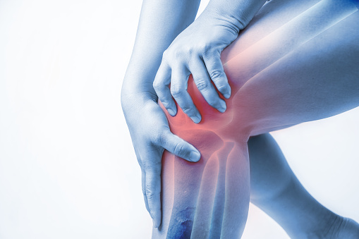
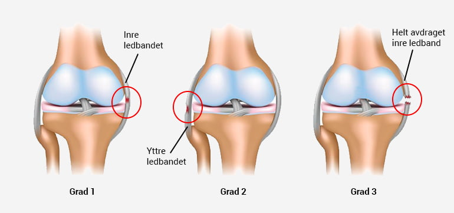

Inom fotboll är det vanligt med knäskador på grund av den höga fysiska belastningen och det snabba och intensiva spelet. Fotbollsspelare kan drabbas av knäskador som ACL-skador (skada på det främre korsbandet), meniskskador och ledbandsskador. Dessa skador kan orsakas av en plötslig vridning av knät, en direkt stöt mot knät eller överanvändning av knät under träning och match. Fotbollsspelare kan också drabbas av överbelastningsskador som patellofemoralt smärtsyndrom, vilket orsakar smärta runt knäskålen. För att minska risken för knäskador är det viktigt att spelare har rätt tränings- och styrkeprogram samt att de har rätt skydd, som knäskydd, och använder rätt teknik för att undvika skador.
 Behandlingen av knäskador inom fotboll beror på skadans omfattning och typ. En del mindre skador kan läka ut på egen hand genom vila, is, kompression och höjdning av det skadade benet (RICE-metoden). Andra skador kan kräva professionell medicinsk hjälp.
Om skadan är allvarligare, till exempel en ACL-skada eller en meniskskada, kan det krävas kirurgisk behandling. Efter operationen kan rehabilitering och fysioterapi hjälpa till att återställa knäets rörlighet och styrka.
För att förebygga knäskador inom fotboll är det viktigt att spelare har rätt tränings- och styrkeprogram för att stärka musklerna runt knäna. Det är också viktigt att använda rätt skydd, som knäskydd, och att använda rätt teknik för att undvika skador. Om en spelare upplever smärta eller obehag i knät bör de söka medicinsk hjälp så snart som möjligt för att undvika att skadan blir värre.
Behandlingen av knäskador inom fotboll beror på skadans omfattning och typ. En del mindre skador kan läka ut på egen hand genom vila, is, kompression och höjdning av det skadade benet (RICE-metoden). Andra skador kan kräva professionell medicinsk hjälp.
Om skadan är allvarligare, till exempel en ACL-skada eller en meniskskada, kan det krävas kirurgisk behandling. Efter operationen kan rehabilitering och fysioterapi hjälpa till att återställa knäets rörlighet och styrka.
För att förebygga knäskador inom fotboll är det viktigt att spelare har rätt tränings- och styrkeprogram för att stärka musklerna runt knäna. Det är också viktigt att använda rätt skydd, som knäskydd, och att använda rätt teknik för att undvika skador. Om en spelare upplever smärta eller obehag i knät bör de söka medicinsk hjälp så snart som möjligt för att undvika att skadan blir värre.